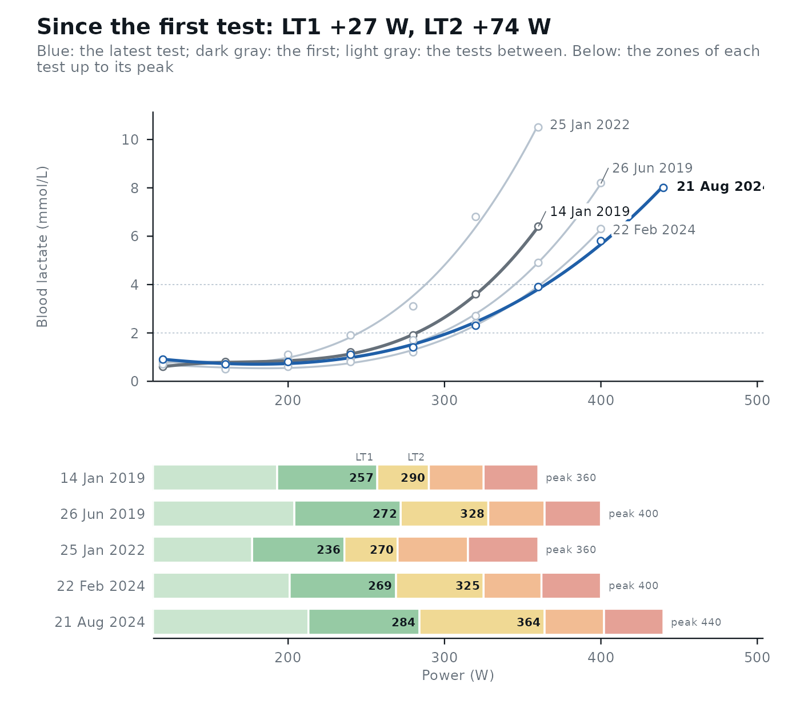
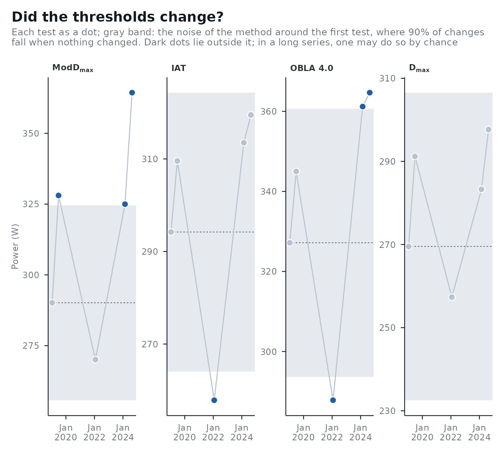

Fits a straight line through each threshold over three or more tests of the same athlete, to show the trend with its uncertainty instead of reading noise from one test to the next.
Usage
lactate_trend(..., day, level = 0.9)
# S3 method for class 'lactate_trend'
autoplot(
object,
method = NULL,
view = NULL,
cv = NULL,
lt1 = NULL,
lt2 = NULL,
...
)Arguments
- ...
The results of
lactate_threshold(), in any order. A list of results can be spliced in with!!!.- day
The date of each test, in the same order as
...: dates, or days since the first test.- level
The confidence level of the interval of the trend, and of the noise band in the
"thresholds"view. Defaults to0.9, as incompare_tests().- object
The result of
lactate_trend().- method
The methods to plot in the
"thresholds"view. Defaults to ModDmax, IAT, OBLA 4.0 and Dmax, which have a published test-retest variation (seecompare_tests()), when present.- view
"curves", the default for up to five tests: the lactate curves of all tests (the latest in blue, the first in dark gray, the tests between in light gray), to see where along the intensity range the curve moved, then their heart rate with LT1 and LT2 as filled points (the latest test labeled), above the five training zones of each test fromlt1andlt2."thresholds", the default for more tests: one panel per method, each test as a dot (with its own bootstrap interval when computed, at theci_leveloflactate_threshold()) and a gray band for the noise of the method around the first test, at theleveloflactate_trend(), so that dots outside the band are changes larger than the noise. Every test is one more look: with nothing changed, at least one dot falls outside a 90% band in 24% of series with three later tests, 33% with five and 43% with eight, so one dark dot in a long series is weak evidence, and the trend line oflactate_trend()is the answer for the series.- cv
The test-retest coefficient of variation (%) for the noise band, as in
compare_tests().- lt1, lt2
The thresholds that mark LT1 and LT2 in the
"curves"view. Default to those each test chose inlactate_threshold().
Value
a lactate_trend tibble with one row per method found in every test: method, tests, the
change per 30 days (per_30_days) with its confidence interval at level (low, high), and the first and last
fitted values. Plot it with autoplot(): up to five tests as their lactate curves and training zones, more as each
threshold over time.
References
Hopkins WG. Measures of reliability in sports medicine and science. Sports Medicine. 2000;30(1):1-15.
Examples
series <- subset(lactate_tests, athlete == "cyclist_series")
days <- c(0, 163, 1107, 1865, 2046)
tests <- lapply(days, function(d) {
lactate_threshold(subset(series, day == d), intensity, lactate, plot = FALSE)
})
## the test dates are not in the data: an example start date
trend <- lactate_trend(!!!tests, day = as.Date("2019-01-14") + days)
trend
#> # A tibble: 18 × 7
#> method tests per_30_days low high first last
#> <fct> <int> <dbl> <dbl> <dbl> <dbl> <dbl>
#> 1 Log-log 5 -0.1 -0.8 0.7 233 229
#> 2 OBLA 2.0 5 0.2 -0.8 1.3 279 295
#> 3 OBLA 2.5 5 0.3 -0.8 1.4 293 312
#> 4 OBLA 3.0 5 0.3 -0.8 1.5 305 327
#> 5 OBLA 3.5 5 0.4 -0.8 1.6 315 339
#> 6 OBLA 4.0 5 0.4 -0.8 1.6 323 351
#> 7 Bsln + 0.5 5 0.2 -0.6 0.9 257 270
#> 8 Bsln + 1.0 5 0.2 -0.7 1.1 277 292
#> 9 Bsln + 1.5 5 0.3 -0.7 1.2 292 310
#> 10 Dmax 5 0.2 -0.5 0.8 274 285
#> 11 ModDmax 5 0.6 -0.8 2 295 335
#> 12 Exp-Dmax 5 0.3 -0.4 1.1 283 307
#> 13 Log-Poly-ModDmax 5 0.3 -0.6 1.2 307 327
#> 14 Log-Exp-ModDmax 5 0.3 -0.6 1.3 313 336
#> 15 LTP1 5 0.4 -1 1.9 221 250
#> 16 LTP2 5 0.4 -0.9 1.6 308 332
#> 17 LTratio 5 0.3 -0.3 0.9 189 207
#> 18 IAT 5 0.2 -0.8 1.2 291 306
autoplot(trend, lt1 = "Bsln + 0.5", lt2 = "ModDmax")

autoplot(trend, view = "thresholds")
